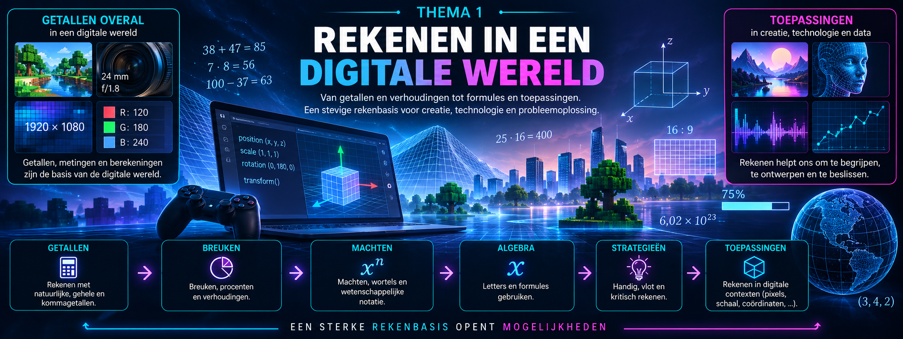

Overzicht van de hoofdstukken
Rekenvaardigheden zijn niet overbodig
Computers voeren elke seconde enorme aantallen berekeningen uit. Games,
animaties, beelden en digitale modellen bestaan uiteindelijk uit getallen:
pixelafmetingen, kleurwaarden, coördinaten, tijdstappen, schaalfactoren,
snelheden en nog veel meer.
Maar een computer die kan rekenen, maakt rekenvaardigheid niet overbodig.
Integendeel. Wie met digitale technologie werkt, moet kunnen inschatten of een
resultaat logisch is, fouten herkennen en begrijpen welke berekening achter een
toepassing zit.
In dit thema bouwen we daarom een stevige rekenbasis op. We starten met
getallen en hoofdrekenen en ontwikkelen strategieën om berekeningen handig,
vlot en betrouwbaar uit te voeren. We leren schatten en controleren, zodat we
niet alleen een antwoord kunnen berekenen, maar ook kunnen beoordelen of dat
antwoord redelijk is.
Daarna onderzoeken we breuken, procenten en verhoudingen. Ze laten ons
dezelfde hoeveelheid op verschillende manieren beschrijven en zijn onmisbaar
bij onder andere schaalfactoren, beeldverhoudingen, resoluties en relatieve
veranderingen.
Ook machten, wortels en wetenschappelijke notatie krijgen een plaats. Daarmee
kunnen we zeer grote en zeer kleine getallen efficiënt voorstellen, vergelijken en
verwerken.
Geleidelijk maken we vervolgens de overgang van rekenen met concrete getallen
naar rekenen met letters en formules. Algebra maakt het mogelijk om patronen
en verbanden algemeen te beschrijven en vormt daarmee een brug naar de
wiskunde die later in de cursus aan bod komt.
Doorheen het thema verbinden we deze technieken met situaties uit de digitale
wereld. We rekenen met pixels, afmetingen, coördinaten, schaalfactoren en
andere grootheden die voorkomen in digitale creatie en technologie.
Het doel is daarbij niet om zoveel mogelijk berekeningen uit het hoofd te maken.
We willen leren wanneer een berekening eenvoudig kan, welke strategie efficiënt
is, wanneer een digitaal hulpmiddel nuttig is en hoe we het verkregen resultaat
kritisch kunnen controleren.
Zo groeien getallen uit van iets waarmee we rekenen tot een taal waarmee we
de digitale wereld kunnen beschrijven en begrijpen.
Thema1-Rekenen/1-Getallen Thema1-Rekenen/2-Breuken Thema1-Rekenen/3-Procenten Thema1-Rekenen/4-Verhoudingen
Overzicht van de hoofdstukken
Overzicht van de hoofdstukken